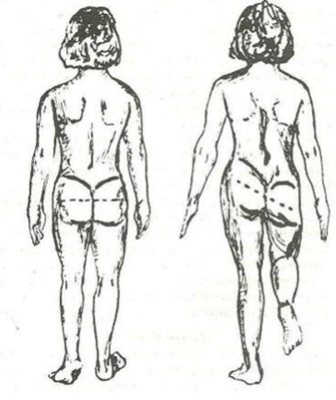
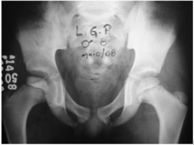
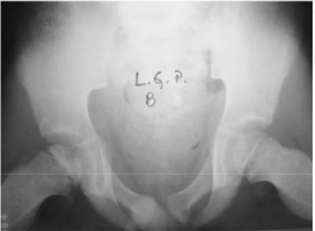
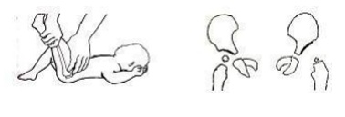

Questão 1 · Epif isiólise do Fêmur Proximal · 4000129588A epi siólise proximal do fêmur constitui alteração da relação anatômica normal entre a cabeça e o colo femoral em pacientes com a linha de crescimento aberta. O escorregamento acontece na camada hipertró ca da placa epi sária femoral proximal. Essa afecção é mais comum
A na raça branca.
B em pacientes maiores de 16 anos de idade.
C no quadril direito dos meninos.
D em pacientes obesos.
Revisar: possível letra faltando em enunciado
Questão 2 · Diagnóstico · 4000124379Carlos, cinco anos, previamente hígido, começou a reclamar de dor na perna direita pela manhã e à tarde já não conseguia andar. No dia seguinte, por não ter melhorado com o repouso, foi levado pela mãe à emergência. Nega trauma prévio ou febre. Apresentou quadro respiratório viral há sete dias. Exame físico: bom estado geral, afebril, limitação de movimentos de rotação do quadril direito. Exames laboratoriais: hemograma, VHS e PCR normais. Assinale a alternativa com o provável diagnóstico e o exame complementar mais indicado.
A Epifisiólise de quadril; radiografia do quadril.
B Artrite séptica; punção articular e cultura do líquido sinovial.
C Tenossinovite transitória do quadril; ultrassonografia do quadril.
D Dor do crescimento; tomografia computadorizada do quadril.
E nenhuma das anteriores está correta.
Questão 3 · Condutas · Tratamento · 4000119791A conduta inicial preconizada para um RN com 4 dias de vida, com suspeita de displasia do desenvolvimento do quadril, realizada pela manobra de Ortolani, em sua primeira consulta médica em UBS, antes do encaminhamento ao ortopedista, é a instalação
A da órtese de Petri.
B da fralda de Frejka e do suspensório de Pavlik.
C da fralda de Frejka, apenas.
D do suspensório de Pavlik.
Questão 4 · Diagnóstico · 4000118963Escolar de 6 anos, previamente hígido com queixa de súbita claudicação ao acordar. A mãe relata que a criança não consegue apoiar o pé direito no chão e reclama de muita dor no quadril. Nega febre e outras queixas, mas refere quadro gripal na semana anterior. O exame físico é normal exceto pela limitação de movimentação do quadril. A hipótese mais provável e o exame a ser realizado é:
A Artrite séptica do quadril e artroscopia.
B Necrose asséptica da cabeça do fêmur e RX de quadril.
C Artrite reumatoide aguda e fator reumatoide.
D Lúpus eritematoso juvenil e FAN.
E Sinovite transitória do quadril e USG de quadril.
Questão 5 · Diagnóstico e classif icação radiográf ica · 4000115491Menino, 12 anos de idade, é levado ao pronto socorro por queixa de dor na virilha esquerda, irradiada para o joelho esquerdo e claudicação há 1 semana. Refere piora dos sintomas ao longo do dia. Nega outros sintomas associados. Nega histórico de trauma recente. Refere apenas um quadro respiratório compatível com resfriado comum que ocorreu na semana passada, já resolvido. Ao exame clínico, é possível notar que o paciente apresenta marcha em rotação externa do membro inferior, com grande di culdade de mobilizar devido a dor, não sendo possível realizar outras manobras. Realizada radiografia de quadril conforme figura a seguir: O diagnóstico mais provável é:

A Sinovite transitória de quadril.
B Doença de Legg-Calvé-Perthes.
C Epifisiolistese proximal do fêmur.
D Artrite séptica de quadril.
E Síndrome de Osgood-Schlatter.
Questão 6 · Pioartrite · 4000114404Paciente, com 4 anos, é levado ao PA, há 10 dias atrás teve queda de bicicleta. Apresenta escoriação no joelho direito, reclamou algumas vezes de dor e teve sensação de febre não aferida, na madrugada. Assinale a alternativa CORRETA:
A O exame mais específico para o diagnóstico é a ultrassonografia.
B Mesmo nos casos sem flogose local, de claudicação e restrição de movimento, a artriteséptica deve ser investigada.
C A presença do trauma local sugere infecção por bactérias Gram-negativas.
D A ausência de febre persistente exclui o diagnóstico de complicações mais gravescomo a osteomielite ou a artrite séptica.
Questão 7 · Diagnóstico · 4000107998João, 5 anos, é levado à UBS devido a dor para andar. Mãe relata que acabou de se curar de uma gripe há mais ou menos uma semana. Nega quedas ou trauma. Exame físico geral sem alterações. Exame ortopédico mostrou boa mobilidade do joelho direito com rotação interna limitada por dor no quadril no mesmo lado. Exames laboratoriais: leucócitos normais, discreta elevação da VHS. Radiografias de perna e quadril: normais. A principal hipótese diagnóstica, dentre as abaixo, é
A escorregamento epifisário femural.
B Síndrome de Legg-Calvè-Perthes.
C sinovite transitória.
D doença de Osgood-Schlatter.
E displasia do desenvolvimento do quadril.
Questão 8 · Apresentação e Diagnóstico Clínicos · 4000099555Menina, 3 meses, em consulta de rotina de puericultura. Mãe refere que há uma semana vem tendo di culdade progressiva para trocar as fraldas. Antecedente gestacional: pré-natal sem intercorrências, parto cesárea por apresentação pélvica. Exame físico: assimetria de pregas glúteas, limitação da abdução da articulação do quadril esquerdo. O DIAGNÓSTICO É:
A Displasia do desenvolvimento do quadril.
B Artrogripose.
C Sequela de tocotraumatismo.
D Epifisiolistese.
Questão 9 · Diagnóstico · 4000099458Menino, 3a, é trazido ao Pronto Socorro por dor no membro inferior direito e di culdade para deambular há 1 dia. Nega febre. Antecedente familiar: irmão com quadro de resfriado há 10 dias. Exame físico: T= 36,8°C; FR= 16irpm; FC= 90bpm; membros: limitação a rotação interna e externa do quadril direito, não realiza extensão completa do membro inferior direito. O DIAGNÓSTICO É:
A Febre reumática.
B Doença de Legg-Calve-Perthes.
C Sinovite transitória.
D Artrite idiopática juvenil.
Questão 10 · Diagnóstico · 4000096441Escolar de seis anos, sexo masculino, é levado ao pediatra por estar “mancando” há dois dias. Mãe relata quadro viral há uma semana e nega trauma direto. Exame físico: sinais vitais normais. Boa mobilidade do joelho direito com rotação interna limitada por dor no quadril no mesmo lado. Exames laboratoriais: leucócitos normais, discreta elevação da VHS. Radiogra as de perna e quadril direitos: normais. A hipótese diagnóstica é:
A sinovite transitória
B doença de Osgood-Schlatter
C displasia do desenvolvimento do quadril
D escorregamento epifisário femural proximal
E doença de legg-calvé- Perthes
Questão 11 · Displasia do Desenvolvimento do Quadril · 4000085830Recém-nascido masculino, 36 horas de vida, a termo, adequado para a idade gestacional, nasceu por cesariana por apresentação pélvica, sem intercorrências. Recebendo alimentação ao seio, eliminações normais. Ao exame físico, apresenta sinal de Ortolani e de Barlow positivos à esquerda e assimetria das pregas cutâneas dos membros inferiores. Em relação à hipótese diagnóstica mais provável para esse paciente, afirma-se: I. O quadril esquerdo é o lado mais afetado e a apresentação pélvica é considerada como fator de risco. II. Está indicada a realização de tomografia computadorizada da pelve com medida dos ângulos acetabulares. III. A abordagem cirúrgica está indicada nesse momento. Está/Estão correta(s) apenas a(s) afirmativa(s)
A I.
B III.
C I e II.
D II e III.
Questão 12 · Apresentação e Diagnóstico Clínicos · 4000078242No exame de rotina de um neonato feminino antes da apara da maternidade, o pediatra ao realizar o exame físico dos membros inferiores, constatou o “sinal do clique”, ao abduzir uma das coxas do neonato. A principal hipótese diagnóstica é a:
A doença de Osgood-Schlatter.
B agenesia de cabeça de fêmur.
C doença de Legg-Calvé-Perthes.
D osteogenesis imperfecta.
E displasia do desenvolvimento do quadril.
Questão 13 · Diagnóstico · 4000077364Pré-escolar, quatro anos, com claudicação, há 48 horas, não relacionada à trauma. Apresentou quadro respiratório viral há uma semana. Exame físico: afebril, em bom estado geral, com limitação de movimentos de rotação do quadril esquerdo. Exames laboratoriais: hemograma, VHS e proteína C reativa dentro da normalidade. As radiogra as de perna e quadril esquerdos não apresentam alterações. A hipótese diagnóstica mais provável é:
A sarcoma de Ewing
B doença de Legg-Calvé-Perthes
C epifisiólise
D sinovite transitória
Questão 14 · Diagnóstico por imagem · 4000072216Recém-nascido de apresentação pélvica, de parto vaginal, sem intercorrências, apresenta sinal de Ortolani positivo à esquerda durante o exame físico. O exame complementar do quadril, mais adequado para a confirmação do diagnóstico, é:
A Ultrassonografia.
B Radiografia simples.
C Ressonância magnética.
D Tomografia computadorizada.
Questão 15 · Diagnóstico e classif icação radiográf ica · 4000070772Adolescente, masculino de 12 anos, chega ao consultório com queixa de dor em joelho esquerdo há um mês, com irradiação para coxa e que piora ao exercício, além de claudicação intermitente e depois contínua. Não há história de febre ou trauma. Exame físico: obeso, com limitação de movimento de rotação e abdução do quadril. Não há edema, calor ou rubor locais. O diagnóstico é:
A epifisiólise
B Osteosarcoma
C doença de Osgood-Schlatter
D dor músculo esquelética idiopática da infância
E doença de Séver
Questão 16 · Diagnóstico por imagem · Tratamento · 4000065609Recém-nascido apresentou, no exame de 6 horas, sinal de Ortolani positivo para o quadril direito. À ultrassonogra a do quadril direito veri cou-se, segundo método de Graaf, ângulo recomendado é:
A Cruento, com osteotomiaperiacetabular.
B Incruento, com aparelho gessado.
C Incruento, com redução fechada e aparelho gessado.
D Incruento, com aparelho dinâmico do tipo Pavlik.
Questão 17 · Diagnóstico e classif icação radiográf ica · 4000048857Lucas, 11 anos, apresenta-se numa Unidade de Pronto Atendimento com queixa de dor no joelho direito há 2 dias. O médico examina os membros inferiores e constata que não há limitação ou dor ao exame dos joelhos, mas há limitação das rotações do quadril direito. Solicita uma radiogra a e constata que, ao traçar uma linha tangenciando a borda superior do colo do fêmur direito, não há o cruzamento da epífise femoral. A esse respeito, é CORRETO afirmar que
A o diagnóstico provável é o deslizamento da epífise femoral proximal.
B a conduta apropriada é solicitar uma ressonância magnética dos quadris, pois o exame radiográfico não é suficiente para diagnosticar essa lesão.
C a doença de Legg Perthes, que significa uma tumoração benigna no colo do fêmur, é o diagnóstico principal a se pensar.
D o médico deve liberar a criança com medicamentos e encaminhar o mais rápido possível para treinos de propriocepção e saltos, para favorecer a recuperação.
E deve-se indicar gesso inguinopédico para cicatrização de possível lesão no colo do fêmur.
Questão 18 · Tratamento · 4000025600A sinovite transitória de quadril caracteriza-se por quadro agudo de dor, afetando, aos poucos, um lado dos quadris da criança sadia. O tratamento dessa afecção é:
A cirúrgico, por artrotomia.
B por tração esquelética.
C estritamente sintomático.
D conservador, com injeção intra-articular de corticosteroide.
Questão 19 · Apresentação e Diagnóstico Clínicos · 4000025579Displasia do desenvolvimento do quadril é uma expressão genérica que descreve um espectro de anormalidades anatômicas do quadril, que podem ser congênitas ou de desenvolvimento após o nascimento. Ao exame físico, nota-se o encurtamento femoral do lado acometido
A pelo sinal de Galeazzi.
B pela assimetria das pregas inguinais.
C pelo teste de Ortolani.
D pelo teste de Barlow.
Questão 20 · Quadro clínico e diagnóstico · Condutas · 4000012329Criança, 8 anos de idade, chegou ao pronto-socorro com queixa de febre e dor no quadril direito há 2 dias. Exame físico: limitação da mobilidade da articulação do quadril direito. Exames laboratoriais: leucocitose com desvio a esquerda e aumento da velocidade de hemossedimentação. Qual é a hipótese clínica mais provável e os exames de imagem mais adequados?
A Pioartrite, cintilografia óssea e ressonância magnética.
B Artrite reumatoide juvenil, radiografia e tomografia computadorizada.
C Osteoma osteóide, radiografia e ressonância magnética.
D Artrite reumatóide juvenil, radiografia e ressonância magnética.
E Pioartrite, radiografia e ressonância magnética.
Questão 21 · Etiologia e Fatores de Risco · 4000011100Um exame físico completo deve ser realizado na primeira consulta de puericultura. Considerando essa informação, julgue o item a seguir. Identi cam-se três fatores de risco para luxação congênita do quadril: gênero masculino; história familiar de displasia congênita do quadril; e parto prematuro.
A Certo.
B Errado.
Questão 22 · Diagnóstico · 4000004080Paciente de 6 anos, sexo masculino, reclama de dor em perna direita logo ao acordar, sendo que, à tarde, já não conseguia andar. No dia seguinte, por não ter melhorado com o repouso, foi levado pelos pais ao Pronto-Socorro. Nega trauma prévio ou febre. Apresentou quadro respiratório viral há 5 dias. Ao exame físico: bom estado geral, afebril, limitação de movimentos de rotação do quadril direito. Você solicita alguns exames de triagem, com hemograma, VHS e PCR normais. O próximo exame indicado é:
A Radiografia do quadril
B Cultura do líquido sinovial
C Ultrassonografia do quadril
D Tomografia computadorizada do quadril
E Ressonância magnética de quadril
Questão 23 · Quadro clínico e diagnóstico · 4000003803Menino de 2 anos, com história de febre há 3 dias, acompanhada de coriza amarelada. Há dois dias irritabilidade e há um dia com T= 39°C e recusa-se a deambular (chora). Ao exame físico, apresenta dor às manobras de movimentação de quadril esquerdo. Qual o diagnóstico mais provável?
A Febre reumática.
B Leucemia linfoide aguda.
C Artrite séptica.
D Necrose asséptica do quadril.
E Artrite idiopática juvenil.
Questão 24 · Quadro clínico e diagnóstico · 4000130359Menino, 18 meses, previamente hígido, é trazido à Unidade Básica de Saúde devido a febre há um dia. Hoje, amanheceu com irritabilidade e não quer andar, recusa-se a mexer a perna direita. Nega traumas locais. Imunização: BCG e uma dose de hepatite B (visto o cartão). Exame físico: regular estado geral, irritado, T= 38,9°C, FC= 120 bpm, FR= 25irpm; Osteoarticular: rotação externa da coxa em repouso e resistência à movimentação passiva da articulação coxofemoral direita. A HIPÓTESE DIAGNÓSTICA E A ETIOLOGIA SÃO:
A Sinovite transitória; pós-viral.
B Artrite Idiopática Juvenil; autoimune.
C Osteomielite de fêmur; Streptococcus agalactiae.
D Artrite séptica; Haemophilus influenza tipo B.
Questão 25 · Diagnóstico · 4000125636Pablito, 7 anos, é levado ao pediatra por estar “mancando” há dois dias. Mãe relata IVAS há uma semana e nega trauma direto ou quedas recentes. Ao exame físico: EGBom, ativo, hidratado, eupneico e afebril. AR e ACV sem alterações importantes. Boa mobilidade do joelho direito com rotação interna limitada por dor no quadril no mesmo lado. Exames laboratoriais: Leucograma: 8500, VH: 44 mm/1 hora. Radiogra as de perna e quadril direitos: normais. A hipótese diagnóstica é:
A Epifisiólise do quadril.
B Sinovite transitória.
C Doença de Osgood-Schlatter.
D Displasia do desenvolvimento do quadril.
E Escorregamento epifisário femural proximal.
Questão 26 · Diagnóstico e classif icação radiográf ica · 4000118391Luís, 14 anos apresenta dor em face interna da coxa com piora progressiva há 15 dias. Há 5 dias apresenta claudicação. A dor não melhora com analgésicos. Nega quadros infecciosos precedentes ou associados, nega febre, perda de peso e apatia. O exame físico revelou dor no quadril direito com limitação à abdução e rotação externa. A principal hipótese diagnóstica é:
A sinovite transitória do quadril.
B epifisiólise proximal do fêmur.
C artrite reumatoide juvenil.
D osteocondrose da cabeça do fêmur.
E doença Osgood Schlatter.
Questão 27 · Diagnóstico · 4000114064Enzo, seis anos, é levado ao pronto atendimento pediátrico por estar claudicando há uma semana. Não há relato de traumas e a genitora a rma que de intercorrências apresentou um quadro disentérico há 3 semanas tratado com cipro oxacina por 3 dias. Exame físico: sinais vitais normais e IMC entre o z escore +1 e +2 DP. Ausculta cardiorrespiratória sem alterações. Abdome inocente. Dor na articulação do quadril direito em movimentos de rotação e adução. Exames laboratoriais: leucócitos normais, discreta elevação da VHS. Radiogra as de perna e quadril direitos: normais. Qual o diagnóstico do paciente?
A Artrite séptica.
B Sinovite transitória do quadril.
C Epifisiólise.
D Doença de Legg-Calvé-P erthes.
E Artrite psoriática.
Questão 28 · Quadro clínico e diagnóstico · Condutas · 4000106211Menino, 5 anos, com febre há 3 dias (3-4x/dia com temperatura axilar de 39°C a 40°C) associado a dor e limitação de movimento de joelho esquerdo. Ao exame físico encontra-se em regular estado geral, febril (38,7°C), FC = 140 bpm, FR = 32 irpm, com pulsos periféricos e perfusão adequada. Para se estabelecer o diagnóstico definitivo, qual dos exames a seguir deve ser realizado?
A Punção articular de joelho esquerdo.
B Ultrassonografia articular de joelho esquerdo.
C VHS, proteína C reativa e anti-estreptolisina O.
D Fator reumatoide e fator antinúcleo.
Questão 29 · Diagnóstico e classif icação radiográf ica · 4000104586Paciente do sexo masculino, de sete anos, apresenta história de asma grave sem acompanhamento regular, é levado ao ambulatório por apresentar claudicação intermitente há aproximadamente um mês. A criança refere dor na região coxofemoral com irradiação em direção à patela, que piora à atividade física. No exame físico, encontra-se: afebril, com limitação da mobilização do membro inferior direito, principalmente da abdução coxofemoral, sem sinais ogísticos. Realizado radiogra a de quadril, que mostra osteoescleorose da cabeça do fêmur e achatamento da epí se. O diagnóstico desde paciente é compatível com:
A Artrite reumatóide juvenil.
B Doença de Legg-Calvet-Perthes.
C Eefeito adverso do antileucotrieno.
D Sinovite traumática.
E Uso repetido de corticóide oral.
Questão 30 · Diagnóstico e classif icação radiográf ica · Condutas e Tratamentos · 4000102354Adolescente, 13 anos, sexo masculino, procura o Pronto Atendimento com queixa de dor em coxa esquerda há 2 semanas, após trauma em um jogo de futebol. A dor irradiase para a face interna da coxa, com piora à deambulação, além de apresentar limitação na rotação e abdução do quadril esquerdo. Considerando o diagnóstico mais provável, o tratamento proposto seria:
A Redução e imobilização gessada
B Fixação in situ
C Antibioticoterapia endovenosa
D Osteotomia
Questão 31 · Diagnóstico · 4000101138Pré-escolar de 04 anos começou a reclamar de dor na perna direita, súbita, pela manhã, houve piora progressiva e no período da tarde já não conseguia andar. Na manhã do dia seguinte o quadro se manteve e a criança foi levada a Unidade de Pronto Atendimento. Cuidador negou trauma prévio ou febre, mas relatou que a criança apresentou quadro respiratório viral há sete dias. Ao exame clínico, apresenta-se em bom estado geral, afebril, limitação de movimentos de rotação do quadril direito. Os exames laboratoriais, hemograma, VHS e PCR estavam normais. Diante do exposto, exame de imagem a ser realizado é:
A Radiografia do quadril.
B Cultura do líquido sinovial.
C Ultrassonografia do quadril.
D Tomografia computadorizada do quadril.
Questão 32 · Pioartrite · 4000086131Diante da suspeita de artrite séptica deve-se considerar que:
A A cultura do líquido sinovial raramente é positiva.
B A VHS é melhor preditora de artrite séptica do que a proteína C reativa.
C Em adolescentes, deve-se suspeitar de etiologia gonocóccica.
D Hemoculturas não ajudam na identificação do agente etiológico.
Questão 33 · Diagnóstico · Tratamento · 4000078301Escolar seis anos, masculino, apresenta dor na virilha direita irradiando quadril. Apresenta claudicação, sustentando bem o peso do corpo. Os sintomas iniciaram há 3 dias. Não tem febre e apresenta excelente estado geral. Hemograma, proteína C reativa e VHS não têm alterações; estudos de imagem do quadril e joelhos, normais. Até há uma semana atrás estava ”resfriado ”. A conduta a ser tomada é:
A internação e uso de antibiótico venoso.
B restrição de atividades e anti-inflamatório não hormonal.
C imobilização e prescrição de antibiótico oral.
D punção articular e uso de corticoide oral.
E repouso no leito, antibiótico oral e anti-inflamatório.
Questão 34 · Quadro clínico e diagnóstico · 4000073021Qual exame diagnóstico mais importante na artrite séptica?
A Hemograma.
B Provas de atividade inflamatória, como a proteína C reativa (PCR) e a velocidade de hemossedimentação (VHS).
C Ultrassonografia.
D Análise do líquido sinovial.
E Radiografias simples.
Questão 35 · Displasia do Desenvolvimento do Quadril · 4000068175Você é chamado para analisar um recém-nascido com suspeita de displasia do desenvolvimento do quadril. Ao chegar na enfermaria do Alojamento Conjunto você relembra seus conceitos sobre o assunto. Dentre as alternativas a seguir, aponte a afirmativa correta sobre a patologia.
A A enfermidade é causada primariamente pela displasia acetabular, sendo que a frouxidão capsular não interfere na fisiopatologia desta entidade.
B Essa displasia de quadril geralmente está associada com outras mal formações ditas menores mas que precisam ser detectadas precocemente.
C O tipo de apresentação do feto no momento do parto em nada predispõe ao desenvolvimento desta patologia, pois a gênese parece ser no período embrionário.
D Se o recém-nascido apresentar dor durante a manobra de Ortolani, confirma-se o diagnóstico de luxação congênita do quadril.
E Mesmo que o exame físico nesse recém-nascido seja normal será necessário a pesquisa ativa durante todo o primeiro semestre de vida.
Questão 36 · Apresentação e Diagnóstico Clínicos · 4000054145Paciente recém nascido é submetido ao teste de Ortolani que é positivo ao exame físico. Este teste visa detectar:
A Síndrome de hiperextensão de joelho
B Luxação congênita do quadril
C Fratura de fêmur
D Fratura de fíbula
Questão 37 · Diagnóstico e classif icação radiográf ica · 4000043167Durante visita da equipe de saúde a um domicílio, a Sra. Gilvanete informa que seu lho de 13 anos de idade, IMC = 28, queixou-se de dor em face anteromedial de coxa e joelho direito, claudicante há 1 mês e com rotação externa do pé direito quando este avaliado em decúbito dorsal, com sinal de Drehman positivo. Baseado no quadro que o lho da Sra. Gilvanete apresenta, o diagnóstico mais provável é:
A Fratura do platô tibial medial do joelho direito.
B Lesão do menisco medial do joelho direito.
C Doença de Legg-Calvé-P erthes.
D Epifisiólise proximal do fêmur.
Questão 38 · Condutas · 4000028961Sobre o tratamento de Artrite Séptica em pediatria, selecione o antimicrobiano de primeira escolha recomendado para o tratamento de um lactente de oito meses de idade, com diagnóstico de Artrite Séptica.
A Vancomicina
B Oxacilina
C Amicacina
D Ceftriaxona
E Ciprofloxacina
Questão 39 · Doença de LeggCalvéPerthes · 4000028287Em relação à doença de Legg-Calvè-Perthes, assinale a afirmativa INCORRETA:
A Acomete mais meninos que meninas.
B A dor no quadril ou joelho é o sintoma predominante.
C Apresenta marcha com padrão de Trendelenburg.
D É prevalente entre 03 a 09 anos.
Questão 40 · Diagnóstico · 4000011784Israel, 09 anos, logo após jogo de futebol, começou a apresentar dor em quadril à direita, com irradiação para a face medial da coxa e do joelho, com claudicação. Realizados exames complementares: radiogra a com distensão da cápsula articular, com hemograma e velocidade de hemossedimentação (VHS) normais. O diagnóstico mais provável de Israel é
A epifisiólise.
B artrite infecciosa.
C artrite tuberculosa.
D sinovite transitória do quadril.
E doença de Legg-Calvé-Perthes.
Questão 41 · Diagnóstico · Tratamento · 4000005497Menino saudável com 2 anos de idade apresenta claudicação há 3 dias e teve infecção das vias aéreas superiores na semana anterior. No exame físico, está em bom estado geral e afebril, com discreta limitação de quadril direito à rotação interna. Os exames laboratoriais estão normais exceto por discreto aumento de velocidade de hemossedimentação (30 mm na 1a hora). Qual a conduta neste caso?
A Reavaliação ambulatorial em 24 a 48 horas.
B Artrocentese de quadril direito.
C Antibioticoterapia imediatamente.
D Realizar tomografia do quadril afetado.
E Prescrever ácido acetilsalicílico 80 mg/kg/dia.
Questão 42 · Diagnóstico · 4000130179Menino, 4a, com diminuição da movimentação da perna direita há três dias e mancando há um dia. Nega febre, irritabilidade e alteração do apetite. Antecedente pessoal: resfriado leve. Exame físico: Bom estado geral, corado, hidratado, afebril; Membros: articulação de quadril direito com discreta dor nas manobras ativas e passivas, sem diminuição da mobilidade. Velocidade de hemossedimentação e Proteína C reativa normais. Radiograma de quadril: normal. O DIAGNÓSTICO É:
A Sinovite transitória.
B Anemia falciforme.
C Febre reumática.
D Artrite idiopática juvenil.
Questão 43 · Epif isiólise do Fêmur Proximal · 4000127677A Epi siólise é caracterizada pelo alargamento e consequente enfraquecimento da camada hipertró ca da placa de crescimento proximal do fêmur. Mediante o estresse mecânico local, propicia o escorregamento da Epífese em relação ao colo femoral ou vice-versa. Qual alteração do movimento do quadril é mais característica de uma Epifisiólise?
A Aumento da flexão e diminuição da rotação medial.
B Extensão aumentada e diminuição da abdução.
C Flexão diminuída e diminuição da rotação.
D Flexão diminuída e aumento da rotação medial.
Revisar: possível letra faltando em enunciado
Questão 44 · Diagnóstico e classif icação radiográf ica · 4000120396Menino de 14 anos com história de dor em face interna da coxa há 15 dias e claudicação nos últimos 5 dias, sem melhora com analgésicos. Nega quadros infecciosos precedentes ou associados, nega sintomas sistêmicos como febre e/ou apatia. EF: paciente brevilíneo apresenta dor ao exame de quadril à direita com limitação à abdução e rotação externa. A hipótese diagnóstica é:
A Osteocondrose da cabeça do fêmur.
B Epifisiólise.
C Artrite séptica.
D Sinovite transitória do quadril.
Questão 45 · Etiologia · 4000118576Criança de 11 meses de idade com pioartrite de joelho esquerdo, os agentes etiológicos prováveis são:
A Stafilococos aureus - streptococo b hemolítico do grupo a.
B Stafilococos aureus - enterococo.
C Stafilococos aureus - hemofilos influenza tipo b.
D Pneumococo - enterobacterias.
Questão 46 · Displasia do Desenvolvimento do Quadril · 4000117279Um Recém-Nascido (RN) foi examinado em alojamento conjunto e apresentou testes de Barlow e Ortolani positivos. Considerando esse caso hipotético, assinale a alternativa CORRETA:
A A ultrassonografia deverá ser utilizada como método de triagem para essa patologia no período neonatal.
B A radiografia convencional é o método diagnóstico mais recomendado para lactentes de um a três meses de vida.
C Torcicolo congênito, apresentação transversa e poli-hidrâmnio são fatores de risco para essa patologia.
D O tratamento é realizado com o uso de três fraldas para manter o quadril em abdução.
E O lactente poderá ser reexaminado entre a 3ª e a 4ª semanas antes de se instituir a terapêutica, pois uma proporção significativa dos quadris se normalizará nesse período.
Questão 47 · Diagnóstico · 4000112157Paciente de 7 anos, masculino, procura pronto atendimento por estar mancando há 2 dias. Paciente teve quadro de resfriado comum há uma semana e nega atualmente febre ou trauma. Ao exame físico tem dor à rotação interna da perna, referida em quadril. Hemograma normal e radiogra a de perna e quadril normais. Assinale a hipótese diagnóstica mais adequada para este caso.
A Displasia de desenvolvimento do quadril
B Doença de Osgood-Schlatter.
C Escorregamento epifisário femural proximal.
D Artrite séptica.
E Sinovite transitória.
Questão 48 · Quadro clínico e diagnóstico · Condutas · 4000106121Menina de 8 anos de idade, previamente hígida, apresenta febre de 38,5°C há 3 dias associada a dor e edema no joelho esquerdo. Hoje a criança acordou indisposta e com di culdade para caminhar. Nega trauma recente, Exame físico: Regular estado geral, hipoativa, febril, frequência cardíaca de 128 bpm, frequência respiratória de 20 mrpm; edema, aumento da temperatura, dor e limitação à movimentação do joelho esquerdo. O restante do exame físico é normal. O tratamento farmacológico mais adequado para essa criança é:
A Imunoglobulina endovenosa
B Antibioticoterapia endovenosa
C Injeção intra-articular de glicocorticoides
D Anti-inflamatórios não hormonais
Questão 49 · Quadro clínico e diagnóstico · Condutas · 4000077422Pré-escolar do sexo masculino, com 4 anos de idade, foi trazido à unidade de pronto atendimento com história de febre elevada de 39°C e irritabilidade há 2 dias. Associado ao quadro, dor intensa no joelho direito, que se encontra com escoriações, edemaciado, quente e hiperemiado, impedindo-o de caminhar. Na anamnese, não se detectou infecção de vias aéreas prévia, mas seus pais relatam que houve uma queda de bicicleta há 5 dias. Solicitado hemocultura, hemograma (leucocitose e desvio para esquerda) e PCR elevado. Ultrassonogra a mostrou aumento de partes moles sem coleção líquida. Baseado na etiologia mais frequente deste quadro, a terapêutica adequada é:
A Penicilina cristalina endovenosa.
B Claritromicina endovenosa.
C Cetoprofeno intramuscular.
D Repouso, compressas frias e ibuprofeno.
E Oxacilina endovenosa
Questão 50 · Diagnóstico e classif icação radiográf ica · Condutas e Tratamentos · 4000071089Um adolescente, com 14 anos de idade, é trazido à consulta médica em Unidade Básica de Saúde com queixa de dor de intensidade leve na virilha esquerda, iniciada há duas semanas, com piora progressiva. O paciente relata que a dor irradia pela face interna da coxa até o joelho, e que agora apresenta di culdade para caminhar. Nega febre ou traumatismo local. O exame físico evidencia: peso = 68 kg, altura = 1,62 m. Não é evidenciado edema, calor ou rubor no local. Veri ca-se limitação da mobilidade da articulação coxofemoral esquerda em decúbito dorsal. Nesse caso, a conduta indicada é:
A solicitar hemograma, fator reumatoide e pesquisa de anticorpos antinucleares.
B encaminhar o paciente com urgência para avaliação de ortopedista/traumotologista.
C prescrever analgésico ou anti-inflamatório via oral e solicitar retorno do paciente em 48 horas.
D solicitar ultrassonografia da articulação coxofemoral esquerda e retorno do paciente em 24 horas.
Revisar: possível letra faltando em enunciado
Questão 51 · Etiologia · 4000070707Qual o principal agente etiológico da artrite séptica se considerarmos todas as idades?
A Kingella kingae.
B Stafilococus aureus.
C Escherichia coli.
D Streptococus pyogenes.
E Pseudomonas aeruginosa.
Questão 52 · Diagnóstico DIf erencial da Pioartrite do Quadril · Pioartrite · 4000068651Paciente masculino de 3 anos de idade com queixa de dor no quadril direito há 12 horas, com claudicação, limitação da morbilidade, constante piora da dor e queda do estado geral. Qual a primeira hipótese diagnóstica que deverá ser investigada?
A Luxação do quadril.
B Sinovite transitória do quadril.
C Fratura do quadril.
D Artrite séptica do quadril.
E Epifisiòlise proximal do fêmur.
Questão 53 · Quadro clínico e diagnóstico · Condutas · 4000065135Uma criança de 1 ano é levada a consulta por apresentar quadro de febre, prostração, dor na manipulação dos membros inferiores e, principalmente, na articulação coxofemoral esquerda. Considerando o caso clínico descrito, assinale a alternativa que apresenta a melhor conduta para esse paciente:
A Antibioticoterapia, se Rx da articulação do coxofemoral estiver alterado
B Antibioticoterapia e punção articular, somente após 24 horas do inicio do antibiótico
C Ultrassonografia da articulação e punção articular, somente se não houver melhora após 72 h do início do antibiótico
D Antibioticoterapia e ultrassonografia com punção articular precoce a fim de prevenir atraso no diagnóstico
Questão 54 · Condutas · 4000059529Qual a principal conduta frente uma criança com diagnóstico de artrite séptica do joelho?
A Internação e início imediato de antibioticoterapia venosa
B Punção articular
C Imobilização com tala para impedir sequela com contratura em flexão
D Artrodese
E Artrotomia
Questão 55 · Etiologia e Fisiopatologia · 4000059482Na doença de Legg-Calvé-Perthes:
A Ocorre a luxação posterior do quadril.
B Ocorre um enfraquecimento na camada hipertrófica da fise com escorregamento da epífise proximal do fêmur.
C É comum o acometimento em recém nascidos.
D O acometimento do sexo feminino é maior.
E Ocorre uma necrose isquêmica ou avascular do núcleo secundário de ossificação da epífise proximal do fêmur.
Questão 56 · Def inição · 4000043843O quadril é uma articulação esferoidal que permite movimentos geométricos, composto pela cabeça femoral e o acetábulo. O rompimento da relação tró ca entre essas duas estruturas ósseas acarretará o desenvolvimento anormal da articulação, sendo uma das causas de dor musculoesquelética na infância e sendo, também, clássica a apresentação de “claudicação indolor”. A osteonecrose ou necrose avascular / asséptica da epífise da cabeça femoral é conhecida como:
A Deslizamento estável da epífise da cabeça femoral.
B Doença de Osgood –Schlatter.
C Sinovite monarticular transitória.
D Doença de Sever.
E Doença de Legg-Calvé-Perthes.
Revisar: possível letra faltando em enunciado
Questão 57 · Semiologia do Quadril · Apresentação e Diagnóstico Clínicos · 4000035506A displasia do desenvolvimento do quadril é uma doença silenciosa, mas de prognóstico ruim quando não diagnosticada. O conjunto de sinais e sintomas dessa doença, facilmente torna o diagnóstico fácil. Qual o sinal relacionado abaixo é devido a fraqueza do glúteo médio?
A Hart.
B Trendelenburg.
C Barlow.
D Ortolani.
Questão 58 · Diagnóstico · 4000029220Escolar de seis anos, sexo masculino, é levado ao pediatra por estar “mancando” há dois dias. Mãe relata quadro viral há uma semana e nega trauma direto. Exame físico: sinais vitais normais. Boa mobilidade do joelho direito com rotação interna limitada por dor no quadril no mesmo lado. Exames laboratoriais: leucócitos normais, discreta elevação da VHS. Radiogra as de perna e quadril direitos: normais. A hipótese diagnóstica é:
A Escorregamento epifisário femural proximal.
B Doença de Osgood-Schlatter.
C Displasia do desenvolvimento do quadril.
D Sinovite transitória.
E Doença de Leg-Calves-P ether.
Questão 59 · Condutas · 4000029033Criança de 9 meses de idade foi diagnosticada com artrite séptica, sendo realizada drenagem e coleta do material para cultura. Qual esquema empírico deve ser iniciado, baseado na etiologia mais comum nesta faixa etária?
A Ampicilina e Gentamicina
B Ceftriaxona
C Oxacilina
D Ampicilina e Amicacina
E Vancomicina
Questão 60 · Diagnóstico · 4000008771Menino de 3 anos de idade com dor à movimentação de quadril direito e claudicação há dois dias, sem febre. Refere resfriado há uma semana. Qual o exame mais importante para o diagnóstico?
A Ressonância magnética de quadris.
B Pesquisa de fator antinuclear.
C Ultrassonografia de quadris.
D Punção articular de quadril direito.
E Radiografia simples de quadris.
Questão 61 · Apresentação e Diagnóstico Clínicos · 4000004909O sinal clínico mais con ável para o diagnóstico da displasia do desenvolvimento do quadril numa criança de 6 a 18 meses de vida é:
A Assimetria de pregas cutâneas no quadril.
B Teste de Ortolani positivo.
C Teste de Barlow positivo.
D Sinal de Galeazzi.
E Limitação de abdução do quadril
Questão 62 · Pioartrite · 4000079246Lactente de 1 ano de idade com história de febre (38°C) e impotência funcional em membro inferior esquerdo, apresenta edema, calor e dor à manipulação do joelho. Assinale a assertiva correta em relação ao caso.
A A solicitação de hemocultura deve ser realizada somente nos casos refratários ao tratamento antibiótico inicial.
B A antibioticoterapia venosa está indicada em menores de 6 meses e nos casos de envolvimento da articulação coxofemoral, para os demais, antibiótico oral.
C O principal agente etiológico em nosso meio é o hemófilo do tipo B, devido à baixa cobertura vacinal.
D O esquema antibiótico empírico inicial de incluir oxacilina e ceftriaxone.
E Nos lactentes, há a possibilidade de osteomielite associada, devido aos vasos transepifisários.
Questão 63 · Displasia do Desenvolvimento do Quadril · 4000079243Assinale a assertiva correta em relação à displasia de quadril (deslocamento congênito do quadril-DCQ).
A As manobras de Ortolani e Barlow devem ser realizadas em todas as crianças na busca do diagnóstico, independentemente da idade.
B A etiologia da DCQ é definida por meio de ultrassom fetal.
C A punção da articulação coxofemoral está indicada nos casos suspeitos.
D Um número significativo de crianças normaliza a articulação até o primeiro mês de vida sem tratamento específico.
E A DCQ é bastante sintomática com dor e limitação dos movimentos evidentes desde o período neonatal.
Questão 64 · Diagnóstico · 4000072167Menor de três anos acordou sem querer andar. Mãe relata que, ao levantar da cama pela manhã, ele reclamou de dor na perna direita e chorou pedindo colo. Refere que há cinco dias o menor apresentou um resfriado leve que durou cerca de três dias, mas que já estava bem. No exame físico o médico reparou que o menor não deixava estender e abduzir o membro acometido. Foram feitos hemograma e VHS que eram normais. A hipótese diagnóstica mais provável é:
A Artrite séptica do joelho.
B Miosite pós-viral.
C Sinovite transitória do quadril.
D Osteosarcoma.
Questão 65 · Etiologia e Fatores de Risco · 4000056387A displasia do desenvolvimento do quadril é uma doença de grande espectro de apresentação, devendo ser avaliada no primeiro exame físico do recém-nascido. É muito importante que se realizem, ainda na maternidade, as amplamente conhecidas manobras que testam a instabilidade, devendo ser rotineiramente pesquisadas em todos os recém- nascidos. A etiologia é desconhecida; no entanto, vários fatores de risco pré e pós-natais podem estar implicados nessa doença. Entre eles, podemos citar:
A Polidrâmnio.
B Multigestação.
C Apresentação transversa.
D Sexo masculino.
E Hiperelasticidade ligamentar.
Questão 66 · Pioartrite · 4000056137A artrite séptica é uma infecção de potencial gravidade que, se não diagnosticada e tratada de forma precoce e adequada, pode evoluir com complicações graves; apresenta alta morbidade e deve ser considerada uma emergência clínica. (RN: recém nascido). Em relação a artrite séptica na infância, assinale a alternativa CORRETA:
A Cerca de 80% dos casos em todas as faixas etárias são causados por bactérias anaeróbicas Gram-negativas.
B Em 90% dos casos, o envolvimento é poliarticular, principalmente em joelhos, quadril e cotovelo.
C Há predomínio do sexo feminino, na proporção 2:1, com exceção da artrite gonocócica no adolescente.
D Acomete todas as idades, porém encontramos com maior frequência em > 3 anos, sendo rara em RN.
E Choro na troca das fraldas em crianças pequenas pode ser o 1º sinal para o diagnóstico de quadril séptico.
Questão 67 · Diagnóstico e classif icação radiográf ica · 4000044148Adolescente de 12 anos procura atendimento médico de emergência, queixando-se de fortes dores no quadril esquerdo e impotência funcional do membro inferior esquerdo. Ao exame físico, o pediatra veri cou peso de 91 kg, estatura de 149 cm, pressão arterial 130/90 mmHg, sem demais anormalidades, Segundo a mãe, o paciente está em vigência de tratamento para emagrecer, e não houve nenhum tipo de trauma no quadril. A hipótese diagnóstica mais provável é:
A Deslocamento epifisário femoral.
B Sinovite transitória de quadril.
C Artrite reumatoide juvenil.
D Artrite séptica de quadril.
E Fratura de colo de fêmur.
Questão 68 · Quadro clínico e diagnóstico · Condutas · 4000035940Criança de 02 anos de idade, sexo masculino. É levada ao pronto-atendimento com história de febre e irritabilidade há 36 horas. No exame físico evidencia-se edema, calor e rubor em joelho direito, resistindo à mobilização passiva. Qual o diagnóstico mais provável e o exame mais importante para confirmar esse diagnóstico?
A Febre reumática / hemograma completo.
B Febre reumática / Velocidade de Hemossedimentação (VHS).
C Artrite séptica / exame do líquido articular.
D Artrite séptica / ultrassonografia de joelho.
Questão 69 · Condutas · 4000028774Criança de 8 anos de idade apresenta quadro de febre moderada contínua, prostração e dor a deambulação no membro inferior esquerdo. No exame físico são observados sinais ogísticos no joelho esquerdo, com dor intensa à movimentação da articulação. A mãe do menor refere que o quadro iniciou dois dias após ter passado todo o dia jogando futebol no clube. Hemograma com presença de leucocitose, neutro lia e presença de mielócitos e metamielócitos. VHS aumentado. Rx do joelho mostrando aumento de partes moles. A análise do líquido sinovial mostrou presença de 70.000 leucócitos com 85% de PMN, aumento de proteína, diminuição da glicose. Qual o melhor esquema terapêutico medicamentoso para este paciente?
A Oxacilina 200 mg/kg/dia.
B Ampicilina 200 mg/kg/dia.
C Ceftriaxona 100 mg/kg/dia.
D Cefepima 100 mg/kg/dia.
Questão 70 · Diagnóstico e classif icação radiográf ica · 4000023837Paciente de 7 anos inicia quadro insidioso com di culdade para deambular há 3 meses, claudicação na marcha e enrijecimento do quadril à esquerda com dor discreta em região anterior da coxa. Qual a principal hipótese diagnóstica?
A Doença de Legg-Calvé-Perthes.
B Artrite juvenil idiopática.
C Fratura de fêmur.
D Artrite séptica.
E Epifisite femoral aguda.
Questão 71 · Diagnóstico e classif icação radiográf ica · 4000023488Mãe traz o lho de cinco anos por claudicação há 20 dias. Nega febre, edema ou dor, mas percebeu que o menino está andando diferente. Limitação discreta à abdução e rotação externa do quadril esquerdo. Nesse caso, qual é a hipótese diagnóstica?
A Epifisiólise.
B Legg-Perthes.
C Sinovite transitória do quadril.
D Osteossarcoma.
Questão 72 · Apresentação e Diagnóstico Clínicos · 4000019597No exame físico do recém-nascido para avaliação de displasia de desenvolvimento do quadril (DDQ), a manobra utilizada e sua respectiva função são:
A Manobra de Barlow - redução do quadril luxado.
B Manobra de Ortolani - redução do quadril luxado.
C Manobra de Hart - luxação do quadril reduzido.
D Manobra de Nelaton - luxação do quadril reduzido.
Questão 73 · Condutas · Etiologia · 4000008862Uma criança de 6 anos de idade chega ao pronto-socorro com queixas de febre alta há dois dias associadas com dor intensa e edema na articulação do joelho esquerdo. O resultado da bacterioscopia do material coletado na punção articular revelou cocos gram negativos. Qual a melhor opção de tratamento antimicrobiano?
A Amicacina.
B Ceftriaxona.
C Oxacilina.
D Cefipime.
Questão 74 · Diagnóstico e classif icação radiográf ica · Condutas e Tratamentos · 4000126864Um adolescente, com 14 anos de idade, é trazido à consulta médica em Unidade Básica de Saúde com queixa de dor de intensidade leve na virilha esquerda, iniciada há duas semanas, com piora progressiva. O paciente relata que a dor irradia pela face interna da coxa até o joelho, e que agora apresenta di culdade para caminhar. Nega febre ou traumatismo local. O exame físico evidencia: peso = 68 kg, altura = 1,62 m. Não é evidenciado edema, calor ou rubor no local. Veri ca-se limitação da mobilidade da articulação coxo-femural esquerda em decúbito dorsal. Nesse caso, a conduta indicada é:
A Solicitar hemograma, fator reumatoide e pesquisa de anticorpos antinucleares.
B Encaminhar o paciente com urgência para avaliação de ortopedista/traumatologista.
C Prescrever analgésico ou anti-inflamatório via oral e solicitar retorno do paciente em 48 horas.
D Solicitar ultrassonografia de articulação coxo-femoral esquerda e retorno do paciente em 24 horas.
Revisar: possível letra faltando em enunciado
Questão 75 · Diagnóstico por imagem · Apresentação e Diagnóstico Clínicos · 4000117905Menina, 6 meses, é trazida pela mãe ao pediatra relatando "problemas nas perninhas" da lactente. Mãe relata estar no D4 de antibiótico para tratamento de otite média aguda. Ao exame físico, o pediatra observa limitação da abdução dos membros inferiores e, ao movimentar a coxa em movimento de puxa e empurra, percebe-se movimentação do fêmur. Realizada manobra de Ortolani e Barlow, ambas negativas. Assinale a alternativa que apresenta o diagnóstico mais provável e o exame que deve ser solicitado para confirmação.
A Epifisite de quadril – RN de quadril.
B Doença de Perthes – Radiografia de quadril em AP e posição de rã.
C Displasia do desenvolvimento do quadril – USG de articulação coxofemoral.
D Sinovite transitória do quadril – Radiografia de quadril em posição de Lauenstein.
Questão 76 · Etiologia · 4000106918Uma criança de 04 anos deu entrada numa unidade de pronto atendimento apresentando febre, irritabilidade, dor intensa na região do joelho esquerdo. Ao exame físico revela dor, calor, rubor e edema do joelho esquerdo. Dentre os agentes causadores desta alteração, o que é mais frequentemente identificado é:
A Staphylococcus aureus.
B klebisiella aerobacter.
C Pseudomonas aeroginosa.
D Streptococcus pneumonia.
Questão 77 · Quadro clínico e diagnóstico · Condutas · 4000106912Uma criança de 04 anos deu entrada numa unidade de pronto atendimento apresentando febre, irritabilidade, dor intensa na região do joelho esquerdo. Ao exame físico revela dor, calor, rubor e edema do joelho esquerdo. Neste caso a conduta adequada para confirmação da suspeita diagnóstica é:
A Solicitar uma cintilografia de joelho.
B Puncionar e pedir análise laboratorial do líquido sinovial.
C Realizar uma tomografia computadorizada de joelho.
D Pedir um hemograma e dosar a PCR.
Questão 78 · Condutas · 4000103120Qual o melhor tratamento para artrite séptica do quadril em crianças?
A Punção articular, antibioticoterapia e, caso não ocorra, melhor a drenagem cirúrgica.
B Drenagem cirúrgica e antibioticoterapia.
C Antibioticoterapia e tração cutânea.
D Punção articular, antibioticoterapia e mobilização precoce.
Questão 79 · Diagnóstico · 4000074528Pré-escolar, sexo masculino, 4 anos de idade, ao acordar pela manhã, queixou-se de dor no membro inferior direito, irradiando para a coxa, evitando deambular ou tocar o pé no chão. Nega febre e vômitos. Bom estado geral; afebril; dor à rotação interna do quadril à direita, limitando também o movimento à abdução. Mãe refere que, há sete dias, ele apresentou um quadro "gripal" com diarreia associada, resolvendo em 3 dias. Nega quedas, sem outros antecedentes patológicos e está com caderneta vacinal atualizada. Diante do relato, trata-se de um quadro de:
A Epifisiólise.
B Artrite infecciosa.
C Sinovite transitória.
D Luxação congênita do quadril.
E Doença de Legg-Calvé-Perthes.
Questão 80 · Pioartrite · 4000073681Uma menina saudável, com 9 anos de idade, é levada ao pronto-socorro do hospital de referência de seu domicílio, com queixa de dor e inchaço em articulação de joelho direito há 1 dia e febre hoje. Os pais referiam queda de bicicleta e trauma fechado em perna esquerda há 10 dias, que evoluiu bem após formação de hematoma no local. Ao exame, a criança estava em bom estado, corada, hidratada e não havia envolvimento de outras articulações. O joelho direito apresentava edema, calor e hiperemia e a criança queixava-se de muita dor. O pediatra solicitou a avaliação do ortopedista, que indicou a punção da articulação, após a avaliação física e do RX, que demonstrava edema de partes moles adjacentes e discreto alargamento da cápsula articular. Os médicos conversaram com os pais acerca da hipótese de artrite séptica e da necessidade de internação para a punção, exames de sangue e tratamento. Os pais da criança solicitam a realização de ultra-sonogra a antes da punção, disponível em um hospital a 250 km de distância, em uma situação de difícil locomoção. Os médicos devem:
A Explicar aos pais que não há vantagem em se realizar a ultrassonografia e que as informações obtidas com o RX são as mesmas que podem ser extraídas da ultrassonografia e que não poderiam autorizar a saída para outro hospital, exceto com alta a pedido.
B Transferir a criança para internação em outro hospital, ainda que distante, pois exames de ultrassonografia ou tomografia realmente se impõem nesta circustância.
C Solicitar aos pais a assinatura de um termo de responsabilidade e liberá-los para procurarem um hospital que possa oferecer todos os recursos, uma vez que a punção só pode ser realizada sob a visão da ultrassonografia.
D Tranquilizar os pais acerca da segurança do procedimento para a análise do líquido, especialmente a bacteriologia, e da importância de se iniciar precocemente o tratamento intravenoso com oxacilina.
E Administrar anti-inflamatório intravenoso e encaminhar de ambulância para a realização da ultrassonografia e retorno, para então realizar a punção e iniciar o tratamento com vancomicina, uma vez que a artrite ocorreu após trauma fechado.
Questão 81 · Diagnóstico e classif icação radiográf ica · 4000067397Menino de 13 anos, negro e obeso, há três semanas apresenta dor no joelho direito, além de leve claudicação. Nega febre ou edema do local. Não há história de infecções virais prévias. Ao exame articular, não há artrite ou restrição de movimento dos joelhos, porém nota-se restrição à rotação interna, abdução e flexão do quadril ipsilateral. O diagnóstico mais provável é:
A Doença de Osgood-Schlatter.
B Sinovite transitória do quadril.
C Epifisiólise proximal do fêmur.
D Doença de Legg-Calvé-P erthes.
Questão 82 · Diagnóstico · 4000060707Escolar de seis anos, sexo masculino, é levado a consulta devido a quadro de claudicação. Mãe relata que seu lho apresentou episódio de resfriado há 10 dias e que não notou nenhuma outra anormalidade. Exame físico: afebril, bom estado geral, dor e limitação de movimentos do quadril direito. A hipótese diagnóstica mais provável é:
A Doença de Legg-Calvé-P erthes.
B Artrite reumatoide juvenil.
C Epifisiólise do quadril.
D Sinovite transitória.
E Artrite séptica.
Questão 83 · Diagnóstico e classif icação radiográf ica · 4000059548Menino de quatro anos de idade apresenta claudicação do quadril direito, sem qualquer trauma prévio. A criança está afebril, em bom estado geral e só se queixa de dor no local. O médico solicitou uma ressonância magnética observando edema na epífise. O diagnóstico provável é
A osteossarcoma.
B hemofilia.
C doença de Legg-Calvé-Perthes.
D artrite séptica.
E púrpura de Henoch-Schönlein.
Questão 84 · Diagnóstico · Tratamento · 4000046314Poliana, 3 anos, foi trazida ao PS com quadro de dor no MID e di culdade para deambular a 24 horas. Sem febre. Nega episódio anterior semelhante. Há 3 dias, brincou muito em "pula-pula" em restaurante da cidade. Calendário vacinal atualizado e DNPM adequado para idade e sexo. Ao exame: BEG, hidratada, ativa, eupnéica, com boa perfusão periférica. Coriza nasal hialina, com discreta hiperemia em orofaringe (neste momento, a mãe informa que seu outro lho "também está gripado"). Exame do tórax e do abdômen foi completamente normal. Tax: 36,8, FC: 86 bpm; FR: 17 irpm. O membro inferior direito tem movimentação passiva e ativa sem dor, não existe ogose e edema. No exame da marcha, há claudicação à direita. Qual a hipótese e conduta mais adequadas?
A Tenossinovite transitória do quadril, punção da articulação.
B Sinovite transiente, radiografias do quadril e observação do quadro.
C Munchausen, AINE + observação do quadro.
D AIJ - forma pauciarticular, aprofundar investigação com exames laboratoriais.
E Pioartrite, internação + antibióticos.
Questão 85 · Apresentação e Diagnóstico Clínicos · Métodos de Screening · 4000035968No exame físico do quadril de um recém-nascido é muito importante o teste de
A Dick
B Adams
C Denver
D Barlow
Questão 86 · Doença de LeggCalvéPerthes · 4000035912Tratando-se da Doença de Legg-Calvé-Perthes, qual afirmativa abaixo está INCORRETA?
A Afeta primariamente crianças do sexo masculino.
B Ocorre mais frequentemente entre 2 e 12 anos de idade, com pico de incidência aos 6 anos de idade.
C Dividida em estágios: inicial, fragmentação, reossificação e remodelação.
D O início dos sintomas é rápido e os mais frequentes são: dor, rigidez, limitação de movimentos do quadril comprometido e claudicação.
Questão 87 · Apresentação e Diagnóstico Clínicos · 4000029705Displasia do Desenvolvimento do Quadril (DDQ) é uma expressão que denota uma anormalidade no tamanho, na morfologia, na orientação anatômica ou na organização da cabeça femural, na cavidade acetabular ou em ambos. O diagnóstico precoce proporciona um tratamento mais e caz com níveis de 96% de bons resultados. Por isso, é necessário um efetivo treinamento de médicos pediatras, neonatologistas e ortopedistas. Qual sinal ou manobra clínica listada abaixo não terá importância no diagnóstico da criança com DDQ, que já iniciou a marcha?
A Assimetria das pregas cutâneas (Sinal de Peter).
B Sinal de Galeazzi.
C Manobra de Ortolani.
D Sinal de Trendelemburg.
Questão 88 · Pioartrite · 4000026999Em relação à pioartrite, indique a afirmativa CORRETA.
A As basctérias alcançam a articulação apenas por via hematogênica.
B Os principais agentes causadores da pioartrite são os vírus.
C Febre é um sintoma raro.
D Não há necessidade de drenagem articular.
E Os fatores de risco no período neonatal são cateterização de vaso umbilical, uso de cateter venoso central.
Questão 89 · Quadro clínico e diagnóstico · Condutas · 4000008923Um adolescente de 15 anos apresenta-se com dor no joelho direito. Ao exame físico ele não consegue apoiar seu próprio peso sobre a articulação afetada. O joelho está dolorido, edemaciado, quente, eritematoso e apresenta uma significativa redução da amplitude de movimento. Qual das opções a seguir representa o melhor passo na avaliação?
A Prescrever um curso de esteroides sistêmicos.
B Obter mais dados da história, incluindo história sexual.
C Marcar uma consulta ambulatorial com ortopedista.
D Prescrever anti-inflamatórios.
Questão 90 · Semiologia do Quadril · Apresentação e Diagnóstico Clínicos · 4000005223No sinal de Galeazzi, observa-se uma diferença de nível dos joelhos com a criança deitada e com os membros etidos. Aponte a alternativa que representa a patologia em que esse sinal clínico é encontrado.
A Luxação do quadril.
B Artrite séptica do joelho.
C Osteocondrite de calcâneo.
D Cifose do adolescente.
Questão 91 · Apresentação e Diagnóstico Clínicos · Métodos de Screening · 4000004139O rastreamento para displasia evolutiva do quadril deve ser realizado nas consultas de puericultura. Quais testes ou manobras devem ser realizados na criança até os 2 meses de idade com esta finalidade?
A Trendelenburg e Hischenberg.
B Trendelenburg e Ortoloni.
C Hischenberg e BarloW.
D Ortoloni e Barlow.
Questão 92 · Quadro clínico e diagnóstico · Condutas · 4000125443Menino de 11 anos, previamente hígido, evoluiu com dor e edema em joelho esquerdo há seis dias e, há três dias, apresenta febre aferida. Relata queda, após brincadeiras com amigos, há oito dias, situação na qual sofreu escoriações super ciais em ambos os joelhos e hematoma importante na coxa e no glúteo, à direita. Ao exame clínico, coriza hialina e febril. O exame osteoarticular evidencia dor à palpação e à mobilização, com edema e limitação da amplitude de movimento em joelho esquerdo, sem outras alterações pertinentes no exame clínico. Os exames laboratoriais mostravam: hemograma com Hb 11,3 g/dl; Ht 32%; leucócitos 25000 (com predomínio de neutró los); plaquetas 430000; PCR 198 e VHS 90 mm. Radiogra a de joelhos dentro da normalidade. Sobre a principal hipótese diagnóstica e a conduta que melhor auxilie no diagnóstico, assinale a alternativa CORRETA.
A Artrite idiopática juvenil; colher FAN e fator reumatoide.
B Artrite reativa; coleta de sorologias virais.
C Artrite séptica; punção articular.
D Artrite traumática; realizar ressonância do joelho.
E Artrite da febre reumática; colher ASLO e realizar ECO.
Questão 93 · Quadro clínico e diagnóstico · 4000110109Criança de 1 ano e 2 meses apresentou febre (39,5°) no momento em que foi dormir, foi medicada com dipirona. Pela manhã voltou a apresentar febre (39,3°), irritabilidade e recusa a deambular. A hipótese diagnóstica inicial é:
A Dengue.
B Meningite.
C Exantema súbito.
D Artrite séptica de quadril.
E Infecção urinária.
Questão 94 · Quadro clínico e diagnóstico · Condutas · 4000107461Criança, 2 anos de idade, com história de febre (38,5°C) há 2 dias. Há um dia não consegue deambular e apresenta-se irritada. Ao exame físico, nota-se choro intenso às manobras de movimentação do quadril direito. No hemograma, observa- se leucocitose e a proteína C reativa está aumentada. O ultrassom mostrou derrame articular. Qual a melhor conduta?
A Reavaliar clinicamente em 48 horas.
B Iniciar antibioticoterapia.
C Solicitar estudo do líquido sinovial (artrocentese).
D Solicitar radiografia simples de quadril (bilateral).
Questão 95 · Quadro clínico e diagnóstico · Condutas · 4000107095Menino de dez anos com quadro de febre alta persistente há cinco dias, associada à dor na virilha, coxa e joelho direito, com claudicação. Há três dias parou de andar. No exame físico, há atitude antálgica em abdução, rotação externa e exão do quadril direito e a movimentação do joelho é livre. Não há lesão óssea evidente nas radiogra as do quadril, coxa e joelho direitos. O hemograma mostra leucocitose com desvio. Assinale o diagnóstico mais provável e a conduta mais apropriada:
A Artrite reumatoide; corticoterapia endovenosa.
B Osteomielite aguda do fêmur; antibioticoterapia endovenosa.
C Febre reumática; antibioticoterapia endovenosa.
D Artrite séptica do quadril; artrocentese do quadril em centro cirúrgico, seguida de drenagem, e antibioticoterapia endovenosa.
Questão 96 · Pioartrite · 4000073996Assinale a assertiva CORRETA em relação à artrite séptica:
A O tratamento antibiótico empírico inicial no RN deve conter drogas antiestafilocócicas e bactérias Gram- negativas.
B É mais frequente em escolares e adolescentes.
C Geralmente é poliarticular.
D A maior via de contaminação é a lesão por contiguidade a partir de lesão de pele próxima à articulação.
E O tratamento cirúrgico somente está indicado após falha do tratamento clínico com antibiótico de largo espectro.
Questão 97 · Quadro clínico e diagnóstico · Condutas · 4000073597Criança de 3 anos, trazida com história de febre, queda do estado geral e dor em membro inferior esquerdo com incapacidade de deambulação há 4 dias. Ao exame temperatura axilar de 39 graus C, dor intensa e impotência funcional em quadril, com atitude em exão, palpação dolorosa de pontos articulares do quadril e bloqueio articular. O hemograma é infeccioso e as radiogra as do quadril normais. Considerando o diagnóstico mais provável, qual das condutas abaixo é mais apropriada?
A Prescrever antitérmico e antibiótico VO e repetir radiografia após 2 dias.
B Solicitar hemocultura e iniciar antibioticoterapia EV por 10 dias.
C Realizar punção articular e, se houver saída de líquido turvo, indicar imediata drenagem cirúrgica aberta e antibioticoterapia EV.
D Realizar punção articular, encaminhar material para cultura e, se esta positiva, realizar drenagem cirúrgica e antibioticoterapia EV.
Questão 98 · Apresentação e Diagnóstico Clínicos · 4000068927Segundo Lovell-Winter, a cada 1000 crianças que nascem, 22 a 50 vão apresentar luxação congênita do quadril. Existe uma manobra semiológica aonde o examinador realiza a exão do quadril seguido de abdução provocando assim a redução da articulação. Qual o nome desta manobra?
A Laseg.
B Moro.
C Ortolani.
D Barlow.
Questão 99 · Quadro clínico e diagnóstico · Condutas · 4000062879Menor, 6 anos, caderneta vacinal em dia, após queda da própria altura, apresenta claudicação e dor em joelho direito. Hoje apresenta hiperemia, edema e calor em joelho direito, além de febre e prostração. Ao exame laboratorial: leucocitose com desvio à esquerda e prova de atividade inflamatória aumentada. Com base na principal hipótese marque a droga de escolha:
A Ceftriaxone
B Oxacilina
C Vancomicina
D Penicilina cristalina
Questão 100 · Diagnóstico e classif icação radiográf ica · Apresentação clínica · 4000040681No item a seguir, é apresentado um caso clínico acerca de doenças ortopédicas e renais na infância, seguindo de uma assertiva a ser julgada. Um menino de sete anos de idade vinha apresentando claudicação em membro inferior direito havia um mês, de aparecimento intermitente, com dor coxofemoral irradiada em direção ao joelho direito. No exame físico, o médico observou que a criança estava afebril, em bom estado geral, com limitação da abdução coxofemoral à direita e sem sinais inflamatórios na referida articulação. Uma radiogra a do quadril mostrou osteosclerose da cabeça do fêmur e achatamento da epífise. Nesse caso, o diagnóstico é doença de Legg-Calvé-Perthes.
A Certo.
B Errado.
Questão 101 · Quadro clínico e diagnóstico · 4000021048Uma criança de 3 anos de idade apresentou febre de 39°C que surgiu a dois dias e desde ontem passou a apresentar dor e impossibilidade de movimentar o membro inferior direito. O exame físico mostrou edema e dor no joelho direito. O exame MAIS IMPORTANTE para confirmar a hipótese de artrite séptica é:
A Radiografia do joelho.
B Hemocultura.
C Tomografia computadorizada de joelho.
D Exame do líquido articular.
Questão 102 · Apresentação e Diagnóstico Clínicos · 4000008035Criança de 14 meses é trazida à consulta por claudicação desde que começou a andar. O exame físico revela que, além da alteração da marcha, a perna direita é menor que a esquerda e a abdução da articulação coxofemural direita é limitada. O provável diagnóstico é:
A Doença de Legg - Perthes
B Displasia do desenvolvimento do quadril
C Sinovite transitória do quadril
D Paralisia cerebral, forma motora
Questão 103 · Apresentação e Diagnóstico Clínicos · 4000000480As manobras de Barlow e Ortoloni são para diagnóstico de:
A Hérnia inguinal.
B Hérnia umbilical.
C Luxação congênita do quadril.
D Hidrocele.
E Criptorquidia.
Questão 104 · Quadro clínico e diagnóstico · Condutas · 4000116660Criança, 2 anos de idade, com história de febre (38,5 °C) há 2 dias. Há um dia não consegue deambular e apresenta-se irritada. Ao exame físico, nota-se choro intenso às manobras de movimentação do quadril direito. No hemograma, observa- se leucocitose e a proteína C reativa está aumentada. O ultrassom mostrou derrame articular. Qual a melhor conduta?
A Solicitar cintilografia com gáleo.
B Solicitar estudo do líquido sinovial (artrocentese).
C Solicitar radiografia simples de quadril (bilateral).
D Iniciar antibioticoterapia.
Questão 105 · Diagnóstico e classif icação radiográf ica · 4000115975Criança de 7 anos, sexo masculino, é trazida com queixa de dor persistente em quadril D há 3 semanas, apresentando claudicação. Não teve febre, nem história de trauma ou de esforço físico exagerado. Ao exame físico, apresenta limitação da movimentação do quadril. A principal hipótese diagnóstica é:
A Epifisiólise da cabeça do fêmur.
B Artrite reacional.
C Artrite juvenil idiopática.
D Sinovite transitória.
E Doença de Legg-Calvé-Perthes.
Questão 106 · Diagnóstico e classif icação radiográf ica · Condutas e Tratamentos · 4000100968Sobre a epi siólise, ou escorregamento epi sário proximal do fêmur, marcar C para as a rmativas Certas, E para as Erradas e, após, assinalar a alternativa que apresenta a sequência CORRETA: ( ) O sinal de Trethowan é visto nos raios X de frente da bacia e corresponde a uma área de esclerose semicircular no colo devido à sobreposição da imagem da epífise escorregada. ( ) O desvio do colo do fêmur ocorre para superior e anterior. ( ) O objetivo principal do tratamento é a fusão precoce da fise, impedindo o agravamento do quadro.
A C - C - C.
B C - E - C.
C C - E - E.
D E - C - C.
E E - E - E.
Questão 107 · Etiologia e Fisiopatologia · 4000089815Na doença de Legg-Perthes ocorre:
A Necrose avascular da tuberosidade anterior da tíbia.
B Rotura do ligamento cruzado anterior.
C Necrose avascular do núcleo epifisário proximal do fêmur.
D Deslocamento e subluxação patelar.
E Osteocondrite vertebral.
Questão 108 · Artrite séptica · Etiologia · 4000059959Dentre os agentes etiológicos abaixo, qual é o responsável mais comum pela artrite séptica em crianças, não se considerando grupos específicos como adolescentes com vida sexual ativa?
A Estreptococos do grupo A.
B Estreptococos do grupo B.
C Estafilococos aureus.
D Neisseria gonorrhoeae.
E Estreptococos epidermitis.
Questão 109 · Displasia do Desenvolvimento do Quadril · 4000050631As manobras ou testes de Barlow e Ortolani são importantes para o diagnóstico da Displasia de Desenvolvimento do Quadril (DDQ). Qual das afirmativas abaixo sobre essas manobras ou testes é a correta?
A O teste de Ortolani detecta quadris instáveis (que se luxam), enquanto o de Barlow os quadris que apresentam displasia acetabular sem instabilidade franca.
B Cerca de 60% dos quadris de recém-nascidos com teste de Barlow positivo se estabilizam naturalmente na primeira semana de vida.
C A normalidade de ambas as manobras afasta totalmente o diagnóstico de DDQ.
D O teste de Ortolani deve ser realizado com o quadril em flexão de 90 graus e o joelho em extensão completa.
E O teste de Barlow é realizado com o quadril em extensão e forçando a adução do quadril para tentar a luxação superior da cabeça do fêmur.
Questão 110 · Diagnóstico por imagem · Apresentação e Diagnóstico Clínicos · Métodos de Screening · 4000035998Displasia do Desenvolvimento do Quadril (DDQ) descreve o amplo espectro de alterações que atingem o quadril em crescimento, desde a displasia até a luxação, passando pelos diferentes graus de subluxação da articulação coxofemoral. O diagnóstico é eminentemente clínico e deve ser realizado o mais precocemente possível no recém- nascido,sendo:
A as manobras de Ortolani e Barlow o método mais eficaz para a suspeita clínica em recém-nascidos e lactentes jovens, respectivamente.
B o parto vaginal, a apresentação pélvica, a multiparidade, o sexo masculino, o oligodrâmnio, a história familiar e a etnia oriental os principais fatores de risco que devem ser levados em consideração.
C a assimetria das pregas glúteas o melhor método clínico, depois da faixa etária neonatal, porque ocorrem invariavelmente depois de um a seis meses de idade, quando a manobra de Ortolani pode não positivar por ser mais difícil reduzir a luxação.
D a radiografia convencional de valor limitado na confirmação diagnóstica da DDQ nos recém-nascidos, enquanto a ultrassonografia do quadril é o exame ideal.
Questão 111 · Diagnóstico e classif icação radiográf ica · 4000029048Paciente de seis anos, do sexo masculino, com história clínica de claudicação e dor na face interna da coxa e joelho direito, além de claudicação à custa do mesmo membro. No exame clínico do quadril direito, apresenta abdução de 25 graus e rotação interna de 10 graus. O diagnóstico mais provável deste paciente é:
A osteomielite aguda.
B artrite reumatoide.
C doença de Legg-Calvé-Perthes.
D sinovite transitória do quadril.
Questão 112 · Pioartrite · 4000025501O diagnóstico diferencial entre a artrite séptica (tratamento cirúrgico) e a sinovite transitória do quadril (tratamento conservador) não é fácil de ser realizado. Muitas vezes, utiliza-se uma propedêutica armada de exames que demanda maior custo e requer melhor infraestrutura da instituição de saúde. Perante isso, torna-se evidente a necessidade de uma análise multifatorial dos dados clínicos e laboratoriais envolvidos para que se possam racionalizar exames visando a correta abordagem e evitando a indicação de procedimentos desnecessários, como a ressonância magnética, ou mais invasivos, como a artrocentese e a drenagem cirúrgica. Na artrite séptica do quadril, qual das alternativas abaixo NÃO é considerada como um dos preditores diagnósticos descritos por KOCHER?
A Dor no quadril, a ponto de não suportar o próprio peso.
B VHS > 40 mm/h.
C Leucocitose superior a 12.000 céls/ml.
D Rubor periarticular.
Questão 113 · Diagnóstico · 4000021128Um pré-escolar de 4 anos, sexo masculino, natural e procedente de Vitória (ES), iniciou quadro de claudicação dolorosa, que di culta a deambulação, embora consiga car em pé. Duas semanas antes do início desse quadro, apresentou 3 dias de sintomas sugestivos de resfriado, semelhante a outros quadros de resfriado anteriores. Nega viagens nos últimos 12 meses. No momento, apresenta-se afebril, em bom estado geral, consegue deambular, mas apresenta dor e limitação de movimentos do quadril direito. A radiogra a de quadril em anteroposterior é normal, e a ultrassonogra a dos quadris evidencia discreto derrame articular. O hemograma evidencia leucometria normal e ausência de anemia, bem como discreta elevação da velocidade de hemossedimentação (VHS). A hipótese diagnóstica mais provável é:
A Artrite idiopática juvenil
B Doença de Legg-Calvé-P erthes
C Epifisiólise do quadril
D Sinovite transitória
E Artrite séptica
Questão 114 · Diagnóstico e classif icação radiográf ica · 4000012633Menino de seis anos, branco, sem outras comorbidades, apresenta queixa de dor em virilha e face medial de joelho esquerdo há uma semana. Não se recorda de trauma que justi que a dor. Ao exame, não se observa edema nem outros sinais ogísticos, apenas restrição da rotação interna e abdução do quadril esquerdo e marcha claudicante. Na radiogra a de quadril, observa-se aumento da densidade óssea na cabeça do fêmur. A principal hipótese diagnóstica é:
A Sinovite transitória de quadril.
B Artrite séptica.
C Osteossarcoma.
D Deslizamento da epífise da cabeça femoral.
E Doença de Perthes.
Questão 115 · Pioartrite · 4000110600Em relação à artrite séptica na infância e adolescência, é CORRETO afirmar que:
A O agente etiológico mais comum em qualquer faixa etária é o Streptococcus pneumoniae.
B O diagnóstico etiológico definitivo de artrite séptica é feito pelo achado de microrganismos na punção articular.
C Pacientes com anemia falciforme apresentam, mais frequentemente, artrite séptica por Staphylococcus aureus.
D O desenvolvimento de artrite séptica por contiguidade de um foco infeccioso próximo é a forma como, mais comumente, o microrganismo atinge o espaço articular.
Questão 116 · Etiologia e Fatores de Risco · 4000083101Todos os fatores de risco abaixo associam-se à displasia do desenvolvimento do quadril, EXCETO:
A sexo feminino.
B apresentação intrauterina de nádegas.
C polidrâmnio.
D história familiar positiva.
E presença de torcicolo congênito.
Questão 117 · Diagnóstico e classif icação radiográf ica · 4000078562Um adolescente de 14 anos chega ao serviço de emergência com dor intensa de início súbito na região do quadril. O exame físico evidencia rotação externa e encurtamento do membro afetado. O diagnóstico adequado para este adolescente é:
A deslizamento da epífise da cabeça do fêmur
B doença de Legg-Calvé-Perthes
C doença de Osgood-Schlatter
D necrose da cabeça do fêmur
Questão 118 · Diagnóstico e classif icação radiográf ica · 4000065773Menino, 11 anos, portador de de ciência idiopática de hormônio de crescimento (GH), repondo este hormônio há 8 meses. Refere dor em joelho esquerdo e leve claudicação, sem febre. Exame físico: ausência de sinais ogísticos articulares, com dor à abdução do quadril esquerdo. A hipótese diagnóstica é:
A Doença de Legg-Calvé-P erthes.
B Doença de Osgood-Schlatter.
C Sinovite transitória do quadril.
D Epifisiolistese da cabeça do fêmur.
Questão 119 · Ortopedia · 4000052374A displasia do desenvolvimento do quadril, nova denominação para a antiga luxação congênita de quadril, tem como melhor diagnóstico em recém-nascido o estudo de imagem:
A Radiografia de quadril em posição de rã.
B Tomografia de quadril.
C Cintilografia de quadril.
D Ultrassonografia de quadril.
E Nenhuma das alternativas.
Questão 120 · Diagnóstico · 4000016673Pré-escoIar de quatro anos, sexo masculino, natural e procedente de Vitória (ES), iniciou quadro de claudicação dolorosa, que di culta a deambulação, embora consiga car em pé. Duas semanas antes do início desse quadro, apresentou três dias de sintomas sugestivos de resfriado, semelhante a outros quadros de resfriado anteriores. Nega viagens nos últimos 12 meses. No momento, apresenta-se: afebril; bom estado geral; consegue deambular, mas apresenta dor e limitação de movimentos do quadril direito. Radiogra a de quadril em AP normal. Ultrassonogra a dos quadris evidencia discreto derrame articular. O hemograma evidencia leucometria normal, ausência de anemia e discreta elevação da Velocidade de Hemossedimentação (VHS). A hipótese diagnóstica mais provável é:
A Artrite idiopática juvenil.
B Doença de Legg-Calvé-P erthes.
C Epifisiólise do quadril.
D Sinovite transitória.
E Artrite séptica.
Questão 121 · Diagnóstico e classif icação radiográf ica · 4000013051Adolescente de 14 anos, obeso, sem outras comorbidades, apresenta queixa de dor em virilha e face medial de joelho esquerdo há uma semana, porém não se recorda de trauma que justi que a dor. Ao exame, não se observam edema nem outros sinais ogísticos, apenas restrição da rotação interna e abdução do quadril esquerdo e marcha claudicante. Ao RAIO X de quadril observa-se alteração da linha de Klein à E. A principal hipótese diagnóstica é:
A Sinovite transitória de quadril.
B Artrite séptica.
C Osteossarcoma.
D Deslizamento da epífise da cabeça femoral.
E Necrose asséptica da cabeça femoral.
Questão 122 · Diagnóstico e classif icação radiográf ica · 4000110220Um menino de 5 anos apresenta di culdade para andar, enrijecimento do quadril à direta e vem mancando há 2 meses. Queixa-se de dor muito leve no local. O diagnóstico mais provável é:
A fratura patológica
B epifisite femoral aguda
C artrite séptica
D doença de Legg-Calvé-Perthes
E artrite juvenil idiopática
Questão 123 · Apresentação e Diagnóstico Clínicos · 4000100470Na displasia do desenvolvimento de quadril, qual manobra é usada para verificar se o quadril é luxável?
A Ortolani.
B Biglow.
C Barlow.
D Perkins.
Questão 124 · Condutas · 4000096524Qual o tratamento de escolha para um lactente de quarenta dias de vida e diagnóstico de artrite séptica da articulação coxofemoral direita?
A Drenagem cirúrgica e tratamento antimicrobiano.
B Drenagem cirúrgica e calor local.
C Punção aspirativa e tratamento antimicrobiano.
D Punção aspirativa e calor local.
E Calor local e tratamento antimicrobiano.
Questão 125 · Diagnóstico · Tratamento · 4000070264SJM, masculino, três anos de idade, com história de quadro viral leve há 7 dias. Nos últimos dois dias, vem apresentando dor em região coxofemoral direta e claudicação. Ao exame físico, apresenta febre baixa e limitação de movimentos. Apresenta hemograma com leucocitose discreta e VHS = 18 mm. Qual o provável disgnóstico e o tratamente para esta criança?
A Artrite séptica do quadril - ceftriaxona + oxacilina.
B Osteomielite em fêmur - vancomicina.
C Sinovite transitória do quadril - repouso e analgésicos.
D Necrose avascular da cabeça do fêmur - cirurgia.
E Osteossarcoma de fêmur- quimioterapia
Questão 126 · Epif isiólise do Fêmur Proximal · 4000069818Em relação à epifisiólise, é correto afirmar, EXCETO:
A Acomete mais o sexo masculino na idade do segundo estirão puberal.
B A incidência radiográfica de Laweinstein da bacia é fundamental para o diagnóstico.
C No paciente com epifisiólise, a linha de Klein não cruza a epífise femoral proximal.
D O tratamento mais adequado é a epifisiodese do fêmur proximal com um parafuso canulado.
E Acomete a camada da fise que está mais fraca que é a germinativa.
Questão 127 · Apresentação e Diagnóstico Clínicos · 4000064589Na avaliação semiológica da displasia do desenvolvimento do quadril, pode-se utilizar o teste do klisic no qual o examinador coloca o 3º quirodácitlo sobre o trocanter maior e o dedo indicador da mesma mão sobre a espinha ilíaca anterossuperior. No quadril luxado, o trocanter estará:
A normal, e uma linha imaginária traçada entre os dois dedos se projeta-se a meio caminho entre o umbigo e o púbis.
B elevado, e uma linha imaginária traçada entre os dois dedos se projeta-se a meio caminho entre o umbigo e o púbis.
C elevado, e uma linha imaginária traçada entre os dois dedos aponta para o umbigo.
D normal, e uma linha imaginária traçada entre os dois dedos aponta para o umbigo.
Questão 128 · Diagnóstico por imagem · 4000048435Na displasia do desenvolvimento do quadril, em crianças de até 6 meses de idade, indica-se como exame de imagem a:
A Ressonância magnética.
B Tomografia axial computadorizada.
C Ultrassonografia.
D Radiografia simples.
E Artrografia.
Questão 129 · Apresentação e Diagnóstico Clínicos · 4000027258A displasia do desenvolvimento do quadril pode levar a graves sequelas e distúrbios de marcha se não for diagnosticada precocemente. Nessa doença:
A o comprimento dos membros inferiores é simétrico, na luxação congênita;
B a cabeça femoral está deslocada parcialmente, na subluxação congênita;
C a evolução é para luxação, mesmo com o diagnóstico precoce;
D a evolução é para subluxação, mesmo nos casos graves.
Questão 130 · Semiologia do Quadril · Quadril Pediátrico · 4000023570Durante o exame físico em uma criança de 7 anos, observa-se o achado demonstrado na ilustração a seguir: Qual a correta descrição do achado do exame físico?

A Sinal de Barlow presente com luxação do quadril à direita.
B Sinal de Barlow presente com luxação do quadril à esquerda.
C Sinal de Trendelemburg presente com luxação do quadril à direita.
D Sinal de Trendelemburg presente com luxação do quadril à esquerda.
Questão 131 · Condutas · 4000000199Menino de 6 anos, deu entrada em Pronto-Socorro infantil com história de febre alta há 2 dias e aumento do volume de joelho direito, mãe refere trauma em partida de futebol há 7 dias. Ao exame físico observa-se joelho direito com edema (+++/4+), hiperemia, calor e limitação importante da amplitude do movimento de flexão desta articulação, além de cicatrizes de impetigo em membros Inferiores. Baseado ainda no QUADRO CLÍNICO, qual das abaixo é a MELHOR conduta a ser tomada?
A Internação hospitalar, punção articular e antibioticoterapia venosa;
B Tratamento ambulatorial e uso de anti-inflamatório não esteroidal;
C Internação hospitalar, penicilina G benzatina, ecocardiograma e AAS em dose anti- inflamatória;
D Tratamento ambulatorial, ultrassonografia do joelho e antibioticoterapia via oral.
Questão 132 · Quadro clínico e diagnóstico · 4000000192Menino de 6 anos, deu entrada em Pronto Socorro infantil com história de febre alta há 2 dias e aumento do volume de joelho Direito, mãe refere trauma em partida de futebol há 7 dias. Ao exame físico observa-se joelho Direito com edema (+++/4+), hiperemia, calor e limitação importante da amplitude do movimento de flexão desta articulação, além de cicatrizes de impetigo em membros Inferiores. Qual a principal hipótese diagnóstica?
A Artrite traumática;
B Febre reumática;
C Polimiosite tropical;
D Artrite séptica;
Questão 133 · Diagnóstico por imagem · Condutas · Apresentação e Diagnóstico Clínicos · 4000118502Menina hígida, 2 meses de idade, nascida de parto cesariana com 40 semanas de idade gestacional, apresentação pélvica, sem outras intercorrências pré e pós-natais. Na consulta de Puericultura, a mãe nega queixas em relação a sua lha. Ao exame físico observa-se limitação indolor da abdução do quadril à esquerda. O diagnóstico e a conduta são:
A displasia do desenvolvimento do quadril; ultrassonografia do quadril e encaminhamento ao ortopedista.
B displasia do desenvolvimento do quadril; radiografia do quadril e encaminhamento ao ortopedista.
C vitimização infantil com fratura de fêmur; radiografia de membro inferior esquerdo e acionamento do Conselho Tutelar.
D vitimização infantil com fratura de fêmur; radiografia de membro inferior esquerdo e elaboração de boletim de ocorrência.
Questão 134 · Sinovite Transitória do Quadril · 4000081076Observe as afirmativas abaixo sobre sinovite transitória do quadril: I) A maioria dos casos ocorre na faixa etária entre 3 a 8 anos de idade. II) Ocorre duas vezes mais em homens que em mulheres. III) Tem sua etiologia desconhecida. IV) Seu tratamento é estritamente sintomático. V) Sua evolução é benigna, não deixando sequelas anatômicas e funcionais. Quais são corretas?
A Somente as afirmativas III, IV e V estão corretas.
B Somente as afirmativas II, IV e V estão corretas.
C Somente as afirmativas IV e V estão corretas.
D Somente as afirmativas I, IV e V estão corretas.
E Todas as afirmativas estão corretas.
Questão 135 · Epif isiólise do Fêmur Proximal · 4000076749Adolescente do sexo masculino apresenta dor no quadril D e anormalidade na marcha há uma semana. Nega qualquer outro sinal ou sintoma. Deslizamento da Epífise da Cabeça do Fêmur (DECF) foi a hipótese diagnóstica sugerida pelo pediatra. Em relação ao DECF, é CORRETO afirmar que:
A Ao exame físico, observamos rotação externa e encurtamento do membro afetado.
B Raramente os pacientes apresentarão evidência de deslizamento contralateral na apresentação inicial.
C A forma crônica é a menos frequente; neste caso, as queixas são dor intensa no quadril e claudicação leve.
D Trata-se de um distúrbio que envolve crianças de cinco até sete anos e a obesidade é fator intimamente relacionado.
Questão 136 · Doença de LeggCalvéPerthes · 4000071393Em relação à doença de Legg-Calvé-Perthes, é correto afirmar que:
A É mais comum no sexo masculino, o lado esquerdo é o mais acometido, mas a bilateralidade pode estar presente em 10% a 20% dos casos e em fases semelhantes e simétricas da doença.
B Devido à irradiação da dor no território sensitivo do nervo obturatório, é comum a criança referir dor na região lateral e posterior do joelho ipsilateral.
C São sinais de quadril em risco (mau prognóstico) a calcificação lateral à epífise, a lise metaepifisária (lesão em “saca-bocado”), a rarefação com geoides metafisários difusos, a horizontalização da placa de crescimento e a subluxação lateral da epífise (também conhecida como sinal de Gage).
D Quanto menor a idade de início da doença, melhor prognóstico.
E O sinal de Caffey (lise subcondral) é uma linha hipotransparente logo abaixo da superfície radiográfica da cabeça óssea femoral.
Questão 137 · Displasia do Desenvolvimento do Quadril · 4000071388Um Pediatra, ao avaliar um recém-nascido oligoidrâminio do sexo feminino na enfermaria de pediatria, observa que o teste de Ortolani foi positivo à esquerda e chama o Ortopedista de plantão para avaliação e conduta. O astuto residente do terceiro ano de Ortopedia vai avaliar o caso e, após o exame físico detalhado conversa com seu staff e afirma: I - Trata-se de uma displasia do desenvolvimento do quadril e não de uma luxação, pois o teste de Ortolani é positivo; II - O melhor exame de imagem a ser realizado no momento para confirmação do diagnóstico é a radiogra a panorâmica de bacia em AP; III - Na ultrassonografia, os métodos de Graf e de Harcke avaliam o quadril de forma dinâmica e estática respectivamente; IV - Normalmente há retroversão do colo femoral. Frente a essas afirmações, qual a resposta correta?
A Todas as afirmativas estão corretas.
B Apenas I e II estão corretas.
C Apenas III e IV estão corretas.
D Apenas II, III e IV estão corretas.
E Nenhuma está correta.
Questão 138 · Diagnóstico e classif icação radiográf ica · 4000066716Um paciente do sexo masculino, 8 anos, apresentou dor inguinal à direita, com claudicação há 2 meses. Qual o provável diagnóstico? (Ver Imagem)


A Epifisiolise femoral proximal.
B Legg-Calve-P erthes.
C Cisto ósseo simples.
D Displasia do desenvolvimento do quadril.
E Osteoartrite séptica.
Questão 139 · Quadro clínico e diagnóstico · Condutas · 4000051998Criança de 3 anos, trazida com história de febre, queda do estado geral e dor em membro inferior esquerdo com incapacidade de deambulação há 4 dias. Ao exame: temperatura axilar de 38,5ºC, dor intensa e impotência funcional em quadril, com atitude em exão e palpação dolorosa de pontos articulares do quadril. O hemograma é infeccioso e a radiografia do quadril é normal. Considerando o diagnóstico mais provável, qual das condutas abaixo é mais apropriada?
A Prescrever antitérmico e antibiótico VO e repetir radiografia após 2 dias.
B Solicitar hemocultura e iniciar antibioticoterapia EV por 10 dias.
C Realizar punção articular, encaminhar material para cultura e, se esta for positiva, realizar drenagem cirúrgica e antibioticoterapia EV.
D Realizar punção articular e, se houver saída de líquido turvo, indicar imediata drenagem cirúrgica e antibioticoterapia EV.
E Antibioticoterapia EV por 72 horas e, caso não haja melhora do quadro clínico ou alteração radiográfica, realizar drenagem cirúrgica.
Questão 140 · Diagnóstico e classif icação radiográf ica · Def inição · 4000036383Das alternativas abaixo, qual é uma osteocondrose que cursa com acometimento da cabeça do fêmur e pode cursar com claudicação e limitação de movimentos, sendo comum a dor referida no joelho ipsilateral:
A Doença de Schewemann.
B Doença de Osgood-Schilatter.
C Doença de Köhler.
D Doença de Sever.
E Doença de Legg-Calve-Perthes.
Questão 141 · Semiologia do Quadril · Apresentação e Diagnóstico Clínicos · 4000028711O quadril de uma criança apresentando exame físico com teste Ortolani (-) e Barlow (+) podemos dizer que o mesmo é:
A Reduzido, mas luxável.
B Reduzido e estável.
C Luxado e redutível.
D Luxado e irredutível.
E Displásico
Questão 142 · Ortopedia Pediátrica · 4000107286Todas as afirmativas abaixo são incorretas, exceto:
A A necrose asséptica da cabeça do fêmur ( legg-perthes) geralmente ocorre após os 12 anos de idade.
B A epifisiólise proximal do fêmur nunca ocorre bilateralmente.
C A pseudo-artrose congênita da tíbia deve ser tratada com drogas que estimulem a osteogênese.
D O tratamento de escolha para a artrite piogênica do quadril deve ser cirúrgico, através da artrotomia
E O tratamento preferido para um paciente com osteomielite crônica do fêmur é antibioticoterapia sistêmica
Questão 143 · Condutas · 4000066775A conduta recomendada diante de uma criança com artrite séptica do quadril, na fase aguda, é:
A antibioticoterapia e tração.
B punção articular, tração e antibioticoterapia.
C punção articular, tração e irrigação contínua.
D drenagem, imobilização e antibioticoterapia.
Questão 144 · Condutas · 4000058259Um recém-nascido de termo, do sexo feminino, apresenta uma manobra de Ortolani positiva no exame de alta do berçário. Com 15 dias de vida, a manobra é novamente positiva, na consulta de puericultura, na unidade básica de saúde. Nesse momento, o médico deve:
A Solicitar radiografias ântero-posterior e lateral da pelve, iniciar o uso de fralda dupla e reavaliar em 1mês.
B Solicitar ultrassonografia de articulações coxofemorais com 1, 3 e 6 meses e, caso as alterações não desapareçam até esse momento, encaminhar a criança para avaliação ortopédica.
C Tranquilizar a mãe sobre o achado e realizar a manobra de ortolani em um mês.
D Solicitar radiografias ântero-posterior e lateral da pelve e encaminhar a criança para avaliação ortopédica.
E Solicitar ultrassonografia de articulações coxofemorais e encaminhar a criança para avaliação ortopédica.
Questão 145 · Pioartrite · 4000058204Em relação à artrite séptica de quadril na criança, assinale a INCORRETA:
A Pode desenvolver-se por contiguidade a partir de uma osteomielite.
B Os Streptococcus do grupo B e Staphylococcus aureus ocorrem predominantemente, abaixo de 4 meses de idade.
C O S. aureus e S. pyogenes ocorre, predominantemente, em maiores de 4 meses.
D O tratamento é essencialmente clínico com antibioticoterapia.
E O uso de cateter umbilical em RN é fator predisponente para a artrite de quadril.
Questão 146 · Apresentação e Diagnóstico Clínicos · 4000018758Uma criança do sexo feminino, com dois anos de idade, primogênita, gerada em apresentação pélvica e nascida de parto cesária, é trazida à consulta com história de retardo da marcha e claudicação às custas do membro inferior esquerdo. Ao exame físico, apresenta sinal de Hart positivo. O diagnóstico provável, neste caso, é:
A epifisiólise proximal do fêmur.
B doença de Legg Calvé Perthes.
C displasia do desenvolvimento do quadril.
D osteogênese imperfecta.
Questão 147 · Diagnóstico por imagem · Semiologia do Quadril · Apresentação e Diagnóstico Clínicos · 4000014516Paciente feminino, 1 ano e 2 meses, apresenta marcha claudicante, limitação da abdução no quadril esquerdo. O exame físico ilustrado foi positivo e o Rx da bacia em AP encontra-se ao lado. Correlacione o achado no exame físico, o diagnóstico e o (s) achado (s) radiológico (s) observado (s) a seguir: (VER IMAGEM)

A sinal de Galeazzi, coxa vara do desenvolvimento, aumento do índice acetabular
B sinal da telescopagem, luxação congênita quadril, arco de Shenton interrompido
C manobra de Ortolani, luxação glenofemural, diminuição do ângulo beta de Graf
D teste de Barlow, coxa vara congênita, diminuição índice acetabular
E grande trocanter esquerdo abaixo da linha Nélaton, displasia do desenvolvimento do quadril , aumento do ângulo alfa de Graf e diminuição do beta
Questão 148 · Quadro clínico e diagnóstico · 4000005865Menino de 2 anos, com história de febre há 3 dias, acompanhada de coriza amarelada. Há dois dias irritabilidade e há um dia com T = 39ºC e recusa-se a deambular (chora). Ao exame físico, apresenta dor às manobras de movimentação de quadril esquerdo. Qual o diagnóstico mais provável?
A Febre reumática.
B Leucemia linfoide aguda.
C Artrite séptica.
D Necrose asséptica do quadril.
E Artrite idiopática juvenil.
Questão 149 · Diagnóstico · 4000079286Criança de cinco anos chega à emergência com história de febre baixa há cinco dias e claudicação com dor no quadril e joelho direitos. O exame físico mostrou bom estado geral e limitação dos movimentos do quadril direito, enquanto o joelho direito apresentava-se normal. O hemograma era normal, velocidade de hemossedimentação de 10 mm na 1º hora e antiestreptolisina. O (ASO) de 400 UI (normal até 200 UI). Na história, constatou-se uma infecção de vias aéreas superiores há cerca de 15 dias, antes do início do quadro atual. A melhor hipótese diagnóstica para o quadro é:
A artrite séptica.
B febre reumática.
C sinovite transitória do quadril.
D necrose avascular da cabeça do fêmur.
Questão 150 · Pioartrite · 4000052352Em relação à artrite séptica do quadril na criança, assinale a alternativa correta.
A O membro acometido frequentemente adquire uma posição de rotação interna e flexão, sendo doloroso à manipulação.
B Alterações radiográficas precoces mostrando aumento do espaço articular e distensão da cápsula sugerem destruição da cartilagem da cabeça femoral.
C O aumento agudo da pressão intra-articular associado ao espasmo muscular pode provocar displasia acetabular com luxação do quadril acometido.
D As bactérias chegam à articulação por três vias, que são, em ordem de importância: hematogênica, contiguidade de foco infeccioso adjacente e inoculação direta.
Questão 151 · Diagnósticos Dif erenciais da Criança Claudicante · Pioartrite · 4000048998Criança de 5 anos de idade com dor no quadril há 2 dias, di culdade para deambular, com antecedente de piodermite recente, devemos pensar em qual diagnóstico? Respostas: 1 12 23 34 45 56 67 78 89 100 111 122 133 144
A Luxação congênita do quadril.
B Epifisiólise femural superior.
C Artrite séptica.
D Doença de Legg-Perthes.
E Afecção reumática.